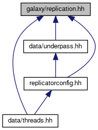

This class downloads replication files, and adds them to the database. More...
#include <filesystem>#include <iostream>#include <string>#include <thread>#include <vector>#include <cstdlib>#include <gumbo.h>#include <mutex>#include <osmium/builder/osm_object_builder.hpp>#include <osmium/handler.hpp>#include <osmium/io/any_input.hpp>#include <osmium/io/any_output.hpp>#include <osmium/visitor.hpp>#include "boost/date_time/posix_time/posix_time.hpp"#include <boost/date_time.hpp>#include <boost/asio/connect.hpp>#include <boost/asio/ip/tcp.hpp>#include <boost/asio/ssl/error.hpp>#include <boost/asio/ssl/stream.hpp>#include <boost/format.hpp>#include "osmstats/changeset.hh"
Include dependency graph for replication.hh:

This graph shows which files directly or indirectly include this file:

Go to the source code of this file.
Classes | |
| class | replication::StateFile |
| Data structure for state.txt files. More... | |
| class | replication::RemoteURL |
| This parses a remote URL into pieces. More... | |
| class | replication::Planet |
| This stores file paths and timestamps from planet. More... | |
| class | replication::Replication |
| Handle replication files from the OSM planet server. More... | |
| struct | replication::membuf |
Typedefs | |
| using | tcp = net::ip::tcp |
Enumerations | |
| enum | frequency_t { minutely , hourly , daily , changeset } |
Detailed Description
This class downloads replication files, and adds them to the database.
Replication files are used to update the existing data with changes. There are 3 different intervals, minute, hourly, or daily replication files are available. Data on the directory structure and timestamps of replication files is cached on disk, to shorten the lookup time on program startup.